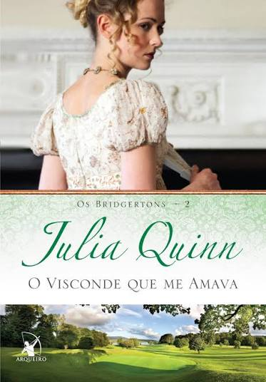
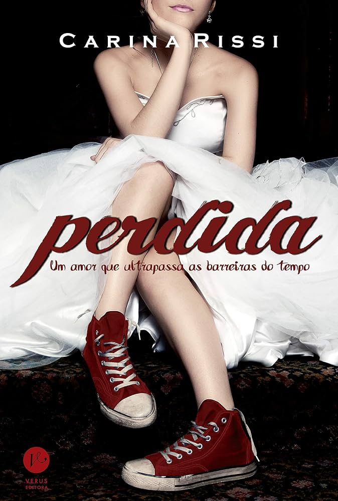

Orgulho e Preconceito
Jane Austen
Elizabeth Bennet é uma jovem inteligente e independente que conhece o reservado Sr. Darcy. Inicialmente, os dois desenvolvem uma relação marcada por julgamentos e desentendimentos. Com o tempo, precisam rever suas opiniões e sentimentos. Um clássico sobre amor, orgulho e diferenças sociais.

O Visconde que me amava
Julia Quinn
Anthony Bridgerton está decidido a encontrar uma esposa, mas não pretende se apaixonar. Seus planos começam a mudar quando conhece Kate Sheffield, uma jovem determinada que não facilita sua vida. Uma história divertida, com romance, provocações e conflitos.

Perdida
Carina Rissi
Sofia é uma jovem moderna que depende da tecnologia no seu dia a dia. Após um acontecimento inesperado, ela acaba sendo transportada para o século XIX, onde precisa aprender a viver em uma realidade completamente diferente. Uma aventura romântica cheia de humor e descobertas.